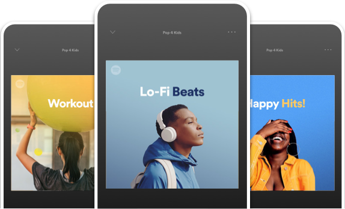

Hablemos de Spotify
¿Como surge Spotify?
Spotify nació en 2006 en Suecia, gracias a la visión de Daniel Ek y Martin Lorentzon. Ellos se dieron cuenta de que la gente quería una forma fácil y legal de acceder a la música en un momento en que la piratería estaba en auge. En 2008, lanzaron oficialmente la plataforma en Europa, y poco a poco fue expandiéndose por todo el mundo. Hoy en día, Spotify es uno de los servicios de música más grandes del planeta, con millones de usuarios disfrutando de su música favorita a diario.
¿Qué tipos de membresías dispone Spotify?
Spotify cuenta hasta el momento con 4 tipos de planes de pago y uno gratuito, entre los cuales podemos destacar los siguientes:
Plan familiar
Cada miembro tiene una cuenta independiente con la que puede escuchar su propia música sin anuncios. No necesitan turnarse.Puedes configurar filtros de contenido explícito para los miembros del plan Premium y así siempre podrás controlar lo que pueden (o no) escuchar.
Plan Individual
Los usuarios que adquieran el plan individual tendrán el control sobre su propia cuenta, sin anuncios, canciones offline, calidad de audio alta y mucho más. Los mejores beneficios para todos aquellos usuarios que se hagan acreedores del plan premium individual. Sin duda una opción viable para empezar
Plan Dúo
Con dos cuentas individuales, cada uno puede disfrutar de la música que más le gusta sin tener que turnarse.Premium Duo es un plan con descuento para 2 personas que viven juntas.Si ya tienes una cuenta Premium, puedes cambiarte a Premium Duo y conservar toda la música, las playlists y las recomendaciones que tengas guardadas.
Plan Universitario
Si eres mayor de 18 años y estás matriculado en una institución educativa que esté acreditada, cumples con los requisitos. Puedes obtener Premium para Estudiantes por hasta 4 años. Después de que el usuario se gradúe o deje de estudiar seguirá teniendo acceso a Premium para Estudiantes por hasta 12 meses a partir de la fecha de tu suscripción o de la última verificación, mientras siga disponible la oferta.
Evolución de Spotify
Con el paso de los años Spotify ha aumentado su fama debido a múltiples factores que la han puesto entre una de las mejores plataformas de streaming del mundo, es por eso que veremos la cantidad de usuarios que Spotify aumentó en tan solo unos años, para ser más precisos tomaremos como ejemplo los años desde 2015 hasta 2019, solo eso nos bastará para darnos cuenta de la gigantesa exposición que ha tenido la app a lo largo de los años
| Año | Usuarios Activos |
|---|---|
| 2015 | 82 Millones |
| 2016 | 113 Millones |
| 2017 | 149 Millones |
| 2018 | 191 Millones |
| 2019 | 248 Millones |
Como podemos observar Spotify con el paso de los años ha aumentado demasiado la cantidad de usuarios activos y sin mencionar los que ingresaron después de 2019, sin duda Spotify ha logrado convertirse en un exponente más de las aplicaciones de servicios de streaming, esperemos que siga su evolución y traiga cada vez ejoras innovadoras